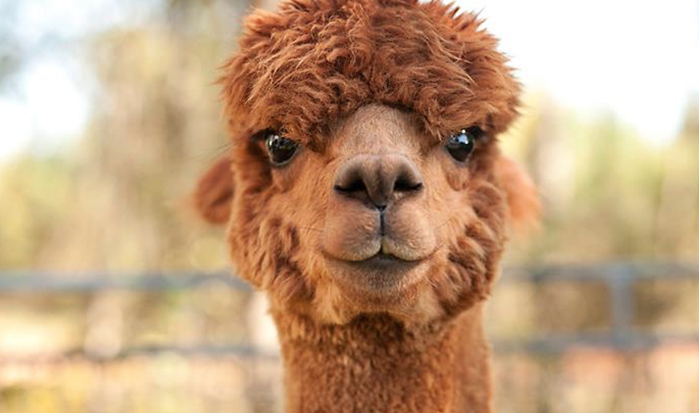
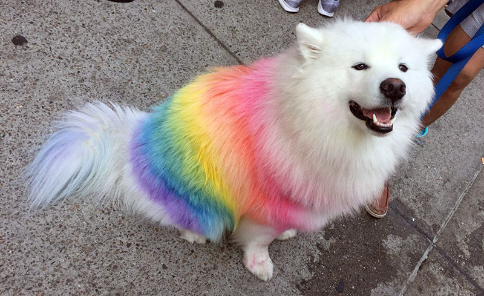
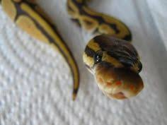

Alpacas are much friendlier and cuter cousin if the Llama. They make amazing pets and
their wool is often used as yard for knitting and crocheting. They are easily recognized
by their round eyes and fluffy faces. They can be found in many regions of South America.
unlike the Llama they were not bred for working. Instead they were bred specifically for their wool.
Yarn made from alpaca wool is one of the most expensive, yet one of the most desired types of yarn.
Samoyed

Samoyeds are on of the most popular breeds of dogs. They can be Easily distinguished
by their fluffy white coat and signature smile. They make very good family dogs and are
easy to get along with. They were bred for herding reindeer in northern Europe. They got their
name from the Samoyedic peoples of Siberia. Their coats are fluffy so that they can survive the
bitter cold in the area they originated from. They make very poor gaurd dogs, due to their
extremely friendly personality. They make amazing companions, and easily get along with children
and even other dogs.
Ball Python

If you're looking to own a snake, Ball pythons are the most ideal. Unlike many snakes, they
have a very friendly personality and loved to be handled by their owner. They can also make
great hats and scarves! Snakes are one of the most feared animals, and are often viewed as
aggressive and harmful. However, ball pythons, along with other domestic types of snakes, only
act against people if they are disturbed or angered. Other than that they are sweethearts who
love to cuddle!